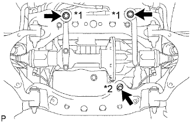
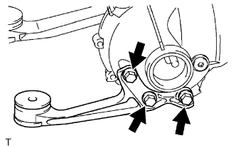
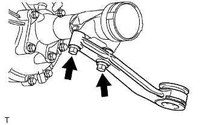
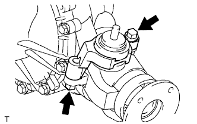

ЧАШКА ПЕРЕДНЕГО ДИФФЕРЕНЦИАЛА В СБОРЕ > СНЯТИЕ |
| 1. ОТСОЕДИНИТЕ ПРОВОД ОТ ОТРИЦАТЕЛЬНОГО ВЫВОДА АККУМУЛЯТОРНОЙ БАТАРЕИ |
| 2. СНИМИТЕ ПЕРЕДНИЕ КОЛЕСА |
| 3. СНИМИТЕ ЗАЩИТУ КАРТЕРА ДВИГАТЕЛЯ № 1 В СБОРЕ |
 |
Выверните 4 болта.
Отсоедините защиту картера двигателя от кузова автомобиля, как показано на рисунке.
| 4. СНИМИТЕ НИЖНЮЮ КРЫШКУ ТРАНСМИССИИ (кроме моделей с 5L-E) |
Выверните 2 болта и снимите нижнюю крышку трансмиссии.
| 5. СНИМИТЕ ЗАДНЮЮ ЗАЩИТУ КАРТЕРА ДВИГАТЕЛЯ В СБОРЕ (кроме моделей с 5L-E) |
Выверните 4 болта и снимите заднюю защиту картера двигателя.
| 6. СЛЕЙТЕ МАСЛО ДЛЯ ДИФФЕРЕНЦИАЛА |
Установите автомобиль на ровной поверхности.
Снимите пробку сливного отверстия дифференциала и прокладку.
Слейте масло.
Установите новую прокладку и пробку сливного отверстия дифференциала.
| 7. СНИМИТЕ ПЕРЕДНИЙ КАРДАННЫЙ ВАЛ В СБОРЕ |
Снимите передний карданный вал (Нажмите здесь).
| 8. СНИМИТЕ ПЕРЕДНИЙ ПРИВОДНОЙ ВАЛ В СБОРЕ |
Снимите передний приводной вал (Нажмите здесь).
| 9. СНИМИТЕ СТОЙКУ ПЕРЕДНЕГО СТАБИЛИЗАТОРА В СБОРЕ |
Для моделей с KDSS:
Снимите стойку стабилизатора (Нажмите здесь).
Для моделей без KDSS:
Снимите стойку стабилизатора (Нажмите здесь).
| 10. СНИМИТЕ ПЕРЕДНИЙ ДАТЧИК ЧАСТОТЫ ВРАЩЕНИЯ |
Снимите передний датчик частоты вращения (Нажмите здесь).
| 11. ОТСОЕДИНИТЕ НАКОНЕЧНИК ЛЕВОЙ РУЛЕВОЙ ТЯГИ В СБОРЕ |
Отсоедините наконечник рулевой тяги в сборе (Нажмите здесь).
| 12. ОТСОЕДИНИТЕ НАКОНЕЧНИК ПРАВОЙ РУЛЕВОЙ ТЯГИ В СБОРЕ |
Отсоедините наконечник рулевой тяги в сборе (Нажмите здесь).
| 13. СНИМИТЕ ЛЕВЫЙ НИЖНИЙ РЫЧАГ ПЕРЕДНЕЙ ПОДВЕСКИ № 1 В СБОРЕ |
Снимите нижний рычаг передней подвески № 1 в сборе (Нажмите здесь).
| 14. СНИМИТЕ ПРАВЫЙ НИЖНИЙ РЫЧАГ ПЕРЕДНЕЙ ПОДВЕСКИ № 1 В СБОРЕ |
| 15. СНИМИТЕ ЧАШКУ ПЕРЕДНЕГО ДИФФЕРЕНЦИАЛА В СБОРЕ |
|  |
Выверните болт и отсоедините кронштейн трубки сапуна переднего дифференциала.
Подоприте передний дифференциал домкратом.
Отверните гайку крепления переднего дифференциала № 1.
Выверните 2 передних крепежных болта и отверните гайку.
| *1 | Крепежный болт |
| *2 | Крепежная гайка |
Отсоедините разъем и шланг привода.
Опустите домкрат и снимите передний дифференциал.
|  |
Выверните 3 болта и снимите опору переднего дифференциала № 1.
|  |
Выверните 2 болта и снимите опору переднего дифференциала № 2.
|  |
Выверните 2 болта и снимите опору переднего дифференциала № 3.